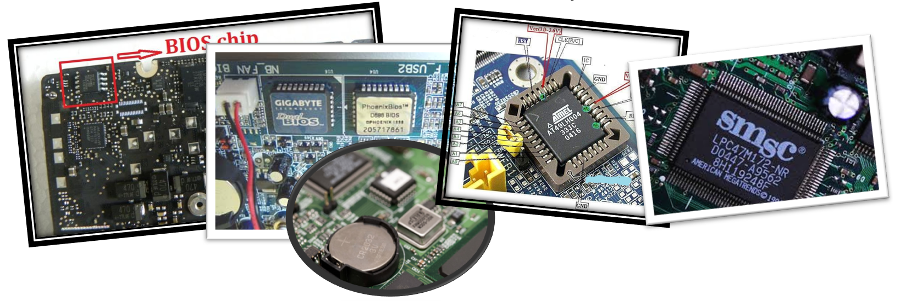
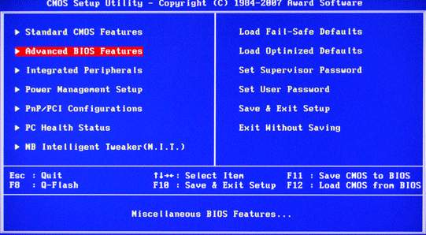
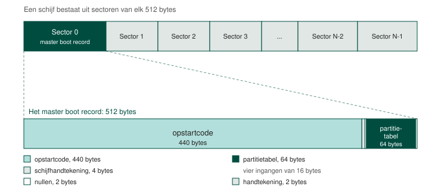
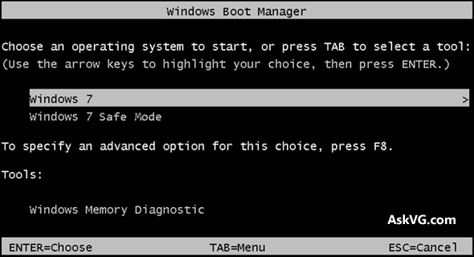

De BIOS of het Basic Input Output System is een (klein ~= 1MB) stukje geheugen dat zich in een computer bevindt op een aparte chip op het moederbord, meestal in de buurt van de batterij.

De BIOS bevat onder andere:
Eén van de eerste taken die die BIOS op zich neemt is controleren als alle nodige hardware aanwezig is en functioneert. Dit wordt ook wel de POST of Power On Self Test genoemd. Als de POST mislukt hoor je vaak een BEEP geluid of zie je een foutboodschap op het scherm.
Volgende apparaten worden gecontroleerd:
Zodra dit is gebeurt gaat de BIOS kijken in zijn intern geheugen om te zien als er bepaalde instellingen moeten worden toegepast op hardware. Deze instellingen blijven, ook als de computer uitstaat, bewaard door middel van de batterij.
Deze kunnen bijvoorbeeld zijn:

In de documentatie van industriële moederborden zien we vaak instructies of best practices wat betreft de instellingen in de BIOS.
De processor is één van de meest energie verslindende apparaten in een computer. Om het energieverbruik te beperken wordt er soms aan speed stepping gedaan. Dit betekent dat we de processor op een lagere kloksnelheid laten draaien om energie te besparen. Thermal monitoring betekent dat we de temperatuur van de processor in de gaten zullen houden en als deze te hoog wordt dan wordt de kloksnelheid automatisch verlaagd.
Het spreekt voor zich dat, als de industriële computer een tijdskritisch proces moet uitvoeren, je niet wil dat de processor ineens trager gaat werken en bijgevolg instructies er langer over zullen doen om uitgevoerd te worden. Om die reden wordt vaak speed stepping uitgezet.
Als laatste moet de BIOS de controle (= de volgende instructie) overdragen aan een ander apparaat. Dit heeft uiteraard als doel om ons een besturingssysteem op te starten.In de BIOS wordt dus ook de opstartvolgorde bijgehouden. Je kan meestal kiezen tussen deze apparaten:
Eén voor één worden die apparaten overlopen. Als een geldig opstartmedium is gevonden start de computer op vanaf dat apparaat. Om te weten als een opstartmedium geldig is of niet wordt gezocht als er een Master Boot Record aanwezig is.
De Master Boot Record is de eerste sector (= eerste geheugenplaats) op een opslagmedium. Deze geheugenplaats is 512 bytes groot waarvan 440 bytes bestemd zijn voor de Master Boot Code.
De Master Boot Code bevat in die 440 bytes instructies die verwijzen naar een ander adres op het opslagmedium. Voor een modern besturingssysteem kunnen in die 440 bytes te weinig instructies om het besturingssysteem van op te starten. Vandaar dat we hier gewoon opnieuw verwijzen naar een ander adres. Op dat adres staat de bootloader die het besturingssysteem gaat opstarten.

De bootloader is opnieuw een verzameling instructies maar deze kan nu om het even welke grootte hebben. Voor alle duidelijkheid is de bootloader niet het besturingssysteem maar wel het programma dat het besturingssysteem opstart. Als je meerdere besturingssystemen hebt geïnstalleerd kan dit programma je ook laten kiezen welk je wenst op te starten.
